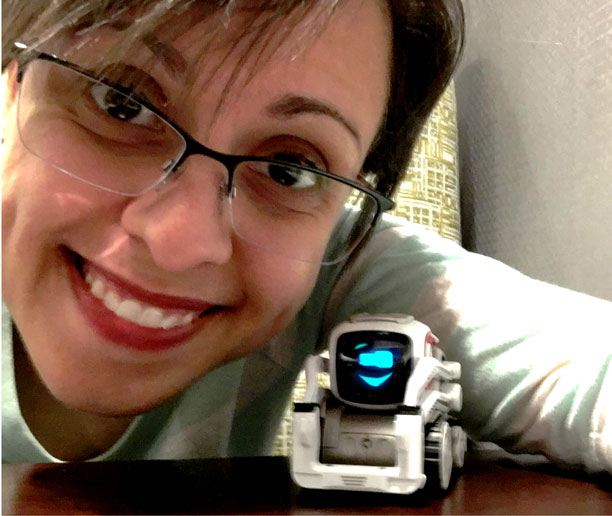

About Me
I'm a developer whose journey started as an IT Technician and Web services consultant. After exploring the area of Information Technologies, and Interactive Media Design, I found myself ever intrigued with the world of programming.
Today, I work as a LAMP stack developer for an IT equipment distributors, and hope to improve and expend my horizons towards IoT and AI. If you have similar interests or would like to network with me for other reasons, feel free to reach out to me through LinkedIn, or follow me on Github.